Sketching Graphs of FunctionsKhảo sát và vẽ đồ thị hàm số
Grade 12 · Topic: Applications of DerivativesLớp 12 · Chủ đề: Ứng dụng đạo hàm
1Lesson IntroductionGiới thiệu bài học
Learning goalsMục tiêu bài học
By the end of this lesson you can:
Sau bài học này, em có thể:
follow the standard steps to study and sketch a graph;
thực hiện đúng các bước khảo sát và vẽ đồ thị;
use symmetry, asymptotes and the variation table;
dùng tính đối xứng, tiệm cận và bảng biến thiên;
sketch cubic, quartic and rational graphs;
vẽ đồ thị hàm bậc ba, trùng phương và phân thức;
describe a graph in English.
mô tả đồ thị bằng tiếng Anh.
2Mathematical VocabularyTừ vựng Toán học
sketching a graph – studying a function and drawing its graph.
Khảo sát và vẽ đồ thị – nghiên cứu hàm số rồi vẽ đồ thị.
even function – \(f(-x)=f(x)\).
Hàm số chẵn – \(f(-x)=f(x)\).
odd function – \(f(-x)=-f(x)\).
Hàm số lẻ – \(f(-x)=-f(x)\).
center of symmetry – a point about which the graph is symmetric.
Tâm đối xứng – điểm mà đồ thị đối xứng qua nó.
intercept – a point where the graph meets an axis.
Giao điểm với trục – điểm đồ thị cắt một trục tọa độ.
variation table – a table showing increase, decrease and extrema.
Bảng biến thiên – bảng cho biết chiều biến thiên và cực trị.
3Useful English PhrasesCụm từ tiếng Anh thường gặp
Study and sketch the graph of the function.
Khảo sát và vẽ đồ thị của hàm số.
The graph is symmetric about the y-axis.
Đồ thị đối xứng qua trục tung.
Find the intercepts with the axes.
Tìm giao điểm của đồ thị với các trục tọa độ.
Draw the asymptotes with dashed lines.
Vẽ các đường tiệm cận bằng nét đứt.
4Prerequisite ReviewÔn tập kiến thức nền
To sketch a graph you combine four earlier skills: the domain, the sign of the derivative, limits and asymptotes, and values at special points.
Để vẽ đồ thị, ta kết hợp bốn kĩ năng đã học: tập xác định, dấu của đạo hàm, giới hạn và đường tiệm cận, cùng giá trị tại các điểm đặc biệt.
A function is even if \(f(-x)=f(x)\) and odd if \(f(-x)=-f(x)\) for every \(x\) in a domain that is symmetric about 0.
Hàm số là hàm số chẵn nếu \(f(-x)=f(x)\) và hàm số lẻ nếu \(f(-x)=-f(x)\) với mọi \(x\) thuộc tập xác định đối xứng qua 0.
5TheoryLý thuyết
5.1 Steps for sketching a graphCác bước khảo sát và vẽ đồ thị
Find the domain. Check whether the function is even, odd or neither.
Tìm tập xác định. Xét hàm số chẵn, lẻ hay không.
Compute \(f'(x)\); find the sign of \(f'\), the intervals of increase and decrease, and the extrema.
Tính \(f'(x)\); xét dấu \(f'\), các khoảng đồng biến, nghịch biến và cực trị.
Find the limits at the ends of the domain and the asymptotes.
Tìm các giới hạn ở hai đầu tập xác định và các tiệm cận.
Make a variation table.
Lập bảng biến thiên.
Find the intercepts with the axes and a few more points.
Tìm giao điểm với trục và vài điểm bổ sung.
Draw the graph, showing asymptotes with dashed lines.
Vẽ đồ thị, vẽ tiệm cận bằng nét đứt.
5.2 SymmetryTính đối xứng
The graph of an even function is symmetric about the y-axis.
Đồ thị hàm số chẵn đối xứng qua trục tung.
The graph of an odd function is symmetric about the origin.
Đồ thị hàm số lẻ đối xứng qua gốc tọa độ.
5.3 Three common typesBa dạng hàm thường gặp
Cubic \(y=ax^3+bx^2+cx+d\): at most two extreme points; the graph is symmetric about a center of symmetry.
Hàm bậc ba \(y=ax^3+bx^2+cx+d\): có tối đa hai điểm cực trị; đồ thị có một tâm đối xứng.
Quartic \(y=ax^4+bx^2+c\): even function, with one or three extreme points.
Hàm trùng phương \(y=ax^4+bx^2+c\): là hàm chẵn, có một hoặc ba điểm cực trị.
\(y=\dfrac{ax+b}{cx+d}\) with \(ad-bc\ne0\): \(y'=\dfrac{ad-bc}{(cx+d)^2}\) has a constant sign; the asymptotes are \(x=-\dfrac dc\) and \(y=\dfrac ac\), and their intersection is the center of symmetry.
\(y=\dfrac{ax+b}{cx+d}\) với \(ad-bc\ne0\): \(y'=\dfrac{ad-bc}{(cx+d)^2}\) có dấu không đổi; các tiệm cận là \(x=-\dfrac dc\) và \(y=\dfrac ac\), giao điểm của chúng là tâm đối xứng.
6Worked ExamplesVí dụ có lời giải
ExampleVí dụ 1BasicCơ bản – A cubic functionHàm số bậc ba
Sketch the graph of \(y=x^3-3x+2=(x-1)^2(x+2)\).
Khảo sát và vẽ đồ thị \(y=x^3-3x+2=(x-1)^2(x+2)\).
Analysis: The domain is \(\mathbb{R}\). Use \(y'\) to find the extrema, then the intercepts.
Phân tích: Tập xác định là \(\mathbb{R}\). Dùng \(y'\) tìm cực trị, rồi tìm giao điểm với trục.
\(y'=3x^2-3=3(x-1)(x+1)\). Increasing on \((-\infty,-1)\) and \((1,+\infty)\); decreasing on \((-1,1)\).
\(y'=3x^2-3=3(x-1)(x+1)\). Đồng biến trên \((-\infty,-1)\) và \((1,+\infty)\); nghịch biến trên \((-1,1)\).
Local maximum \(y(-1)=4\); local minimum \(y(1)=0\). Limits: \(y\to\pm\infty\) as \(x\to\pm\infty\).
Cực đại \(y(-1)=4\); cực tiểu \(y(1)=0\). Giới hạn: \(y\to\pm\infty\) khi \(x\to\pm\infty\).
Intercepts: \(y(0)=2\); \(y=0\) at \(x=-2\) and \(x=1\) (a double root, so the graph touches the x-axis).
Giao điểm: \(y(0)=2\); \(y=0\) tại \(x=-2\) và \(x=1\) (nghiệm kép nên đồ thị tiếp xúc trục hoành).
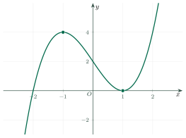
The graph of \(y=x^3-3x+2\).Đồ thị của \(y=x^3-3x+2\).
ExampleVí dụ 2IntermediateTrung bình – An even quartic functionHàm trùng phương (hàm chẵn)
Sketch the graph of \(y=x^4-2x^2\).
Khảo sát và vẽ đồ thị \(y=x^4-2x^2\).
Analysis: The function is even, so the graph is symmetric about the y-axis.
Phân tích: Hàm số chẵn nên đồ thị đối xứng qua trục tung.
\(y(-x)=y(x)\): even. \(y'=4x(x^2-1)\), zero at \(x=0,\pm1\).
\(y(-x)=y(x)\): hàm chẵn. \(y'=4x(x^2-1)\), bằng 0 tại \(x=0,\pm1\).
Local minima \(y(\pm1)=-1\); local maximum \(y(0)=0\).
Cực tiểu \(y(\pm1)=-1\); cực đại \(y(0)=0\).
The x-intercepts are \(x=0\) and \(x=\pm\sqrt2\).
Giao điểm với trục hoành: \(x=0\) và \(x=\pm\sqrt2\).
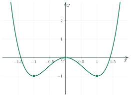
The graph of \(y=x^4-2x^2\).Đồ thị của \(y=x^4-2x^2\).
ExampleVí dụ 3IntermediateTrung bình – A rational functionHàm phân thức bậc nhất
Sketch the graph of \(y=\dfrac{2x-1}{x+1}\).
Khảo sát và vẽ đồ thị \(y=\dfrac{2x-1}{x+1}\).
Analysis: Here \(ad-bc=2\cdot1-(-1)\cdot1=3>0\).
Phân tích: Ở đây \(ad-bc=2\cdot1-(-1)\cdot1=3>0\).
Domain \(x\ne-1\). \(y'=\dfrac{3}{(x+1)^2}>0\): increasing on each of \((-\infty,-1)\) and \((-1,+\infty)\), no extrema.
Tập xác định \(x\ne-1\). \(y'=\dfrac{3}{(x+1)^2}>0\): đồng biến trên từng khoảng \((-\infty,-1)\) và \((-1,+\infty)\), không có cực trị.
Asymptotes: \(x=-1\) (vertical) and \(y=2\) (horizontal). The center of symmetry is \((-1,2)\).
Tiệm cận: \(x=-1\) (đứng) và \(y=2\) (ngang). Tâm đối xứng là \((-1,2)\).
Intercepts: \(y(0)=-1\); \(y=0\) at \(x=\tfrac12\).
Giao điểm: \(y(0)=-1\); \(y=0\) tại \(x=\tfrac12\).
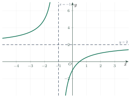
The graph of \(y=\dfrac{2x-1}{x+1}\).Đồ thị của \(y=\dfrac{2x-1}{x+1}\).
ExampleVí dụ 4AdvancedNâng cao – An oblique asymptoteCó tiệm cận xiên
Sketch the graph of \(y=\dfrac{x^2-x+1}{x-1}\).
Khảo sát và vẽ đồ thị \(y=\dfrac{x^2-x+1}{x-1}\).
Analysis: Divide first: \(y=x+\dfrac{1}{x-1}\).
Phân tích: Chia đa thức trước: \(y=x+\dfrac{1}{x-1}\).
Domain \(x\ne1\). \(y'=1-\dfrac{1}{(x-1)^2}=\dfrac{x(x-2)}{(x-1)^2}\), zero at \(x=0\) and \(x=2\).
Tập xác định \(x\ne1\). \(y'=1-\dfrac{1}{(x-1)^2}=\dfrac{x(x-2)}{(x-1)^2}\), bằng 0 tại \(x=0\) và \(x=2\).
Local maximum \(y(0)=-1\); local minimum \(y(2)=3\). Increasing on \((-\infty,0)\) and \((2,+\infty)\); decreasing on \((0,1)\) and \((1,2)\).
Cực đại \(y(0)=-1\); cực tiểu \(y(2)=3\). Đồng biến trên \((-\infty,0)\) và \((2,+\infty)\); nghịch biến trên \((0,1)\) và \((1,2)\).
Asymptotes: \(x=1\) (vertical) and \(y=x\) (oblique).
Tiệm cận: \(x=1\) (đứng) và \(y=x\) (xiên).
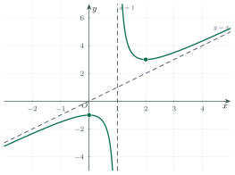
The graph of \(y=\dfrac{x^2-x+1}{x-1}\).Đồ thị của \(y=\dfrac{x^2-x+1}{x-1}\).
7PracticeBài tập luyện tập
A. Multiple ChoiceA. Trắc nghiệm nhiều lựa chọn
Where is the local minimum point of \(y=x^3-3x^2\)?
Điểm cực tiểu của đồ thị \(y=x^3-3x^2\) là điểm nào?
Answer: b. \(y'=3x(x-2)\); the sign changes from \(-\) to \(+\) at \(x=2\), and \(y(2)=8-12=-4\).
Đáp án b. \(y'=3x(x-2)\); dấu đổi từ \(-\) sang \(+\) tại \(x=2\), và \(y(2)=8-12=-4\).
What is the center of symmetry of \(y=\dfrac{2x-1}{x+1}\)?
Tâm đối xứng của đồ thị \(y=\dfrac{2x-1}{x+1}\) là điểm nào?
Answer: a. It is the intersection of the asymptotes \(x=-1\) and \(y=2\).
Đáp án a. Đó là giao điểm của hai tiệm cận \(x=-1\) và \(y=2\).
What is the horizontal asymptote of \(y=\dfrac{3x+1}{x-2}\)?
Tiệm cận ngang của đồ thị \(y=\dfrac{3x+1}{x-2}\) là đường nào?
Answer: a. \(y=\dfrac ac=\dfrac31=3\).
Đáp án a. \(y=\dfrac ac=\dfrac31=3\).
What is the local maximum value of \(y=x^3-3x+2\)?
Giá trị cực đại của hàm số \(y=x^3-3x+2\) là bao nhiêu?
Answer: a. The maximum is at \(x=-1\): \(-1+3+2=4\).
Đáp án a. Cực đại tại \(x=-1\): \(-1+3+2=4\).
B. True or FalseB. Đúng hoặc sai
True or false: the graph of \(y=x^4-2x^2\) is symmetric about the y-axis.
Đúng hay sai: đồ thị \(y=x^4-2x^2\) đối xứng qua trục tung.
True. The function is even.
Đúng. Đây là hàm số chẵn.
True or false: the graph of \(y=x^3\) is symmetric about the y-axis.
Đúng hay sai: đồ thị \(y=x^3\) đối xứng qua trục tung.
False. \(y=x^3\) is odd: its graph is symmetric about the origin.
Sai. \(y=x^3\) là hàm số lẻ: đồ thị đối xứng qua gốc tọa độ.
C. Short AnswerC. Trả lời ngắn
Find the y-intercept of \(y=(x-1)^2(x+2)\).
Tìm tung độ giao điểm của \(y=(x-1)^2(x+2)\) với trục tung.
Enter a number.
Nhập một số.
Answer: 2. \(y(0)=1\cdot2=2\).
Đáp án: 2. \(y(0)=1\cdot2=2\).
How many different x-intercepts does \(y=x^4-2x^2\) have?
Đồ thị \(y=x^4-2x^2\) có bao nhiêu giao điểm phân biệt với trục hoành?
Enter a whole number.
Nhập một số nguyên.
Answer: 3. \(x^2(x^2-2)=0\) gives \(x=0,\pm\sqrt2\).
Đáp án: 3. \(x^2(x^2-2)=0\) cho \(x=0,\pm\sqrt2\).
Find the local minimum value of \(y=\dfrac{x^2-x+1}{x-1}\) at \(x=2\).
Tìm giá trị cực tiểu của \(y=\dfrac{x^2-x+1}{x-1}\) tại \(x=2\).
Enter a number.
Nhập một số.
Answer: 3. \(y(2)=\dfrac{4-2+1}{1}=3\).
Đáp án: 3. \(y(2)=\dfrac{4-2+1}{1}=3\).
The graph of \(y=\dfrac{ax+1}{x-1}\) has the center of symmetry \((1,2)\). Find \(a\).
Đồ thị \(y=\dfrac{ax+1}{x-1}\) có tâm đối xứng \((1,2)\). Tìm \(a\).
Enter a number.
Nhập một số.
Answer: 2. The horizontal asymptote is \(y=a\), so \(a=2\).
Đáp án: 2. Tiệm cận ngang là \(y=a\) nên \(a=2\).
D. Self-practice: Multiple ChoiceD. Tự luyện: trắc nghiệm
Which function has the graph shown in the figure?
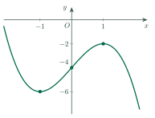
Đồ thị trong hình là của hàm số nào?
Answer: a. Check the shape (\(a\lt0\)), the point on \(Oy\) \((0;-4)\) and the turning points \(x=-1\), \(x=1\): only \(y=-x^3+3x-4\) fits.
Đáp án a. Xét dáng đồ thị (\(a\lt0\)), giao điểm với \(Oy\) là \((0;-4)\) và các điểm cực trị \(x=-1\), \(x=1\): chỉ \(y=-x^3+3x-4\) phù hợp.
The figure shows the graph of a function and its asymptotes (dashed). Which function is it?
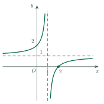
Hình vẽ là đồ thị của một hàm số và các đường tiệm cận (nét đứt). Đó là hàm số nào?
Answer: a. Asymptotes \(x=1\), \(y=1\) and the branches lie top-left and bottom-right: \(y=\dfrac{x-2}{x-1}\).
Đáp án a. Tiệm cận \(x=1\), \(y=1\) và hai nhánh nằm ở góc trên trái và dưới phải: \(y=\dfrac{x-2}{x-1}\).
The figure shows the graph of \(y=ax^3+bx^2+cx+d\). Which is true?
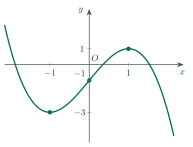
Hình vẽ là đồ thị hàm số \(y=ax^3+bx^2+cx+d\). Khẳng định nào đúng?
Answer: c. The right-hand branch goes down, so \(a\lt0\); the graph meets \(Oy\) at \((0;d)\) below \(Ox\), so \(d\lt0\).
Đáp án c. Nhánh bên phải đi xuống nên \(a\lt0\); đồ thị cắt \(Oy\) tại \((0;d)\) nằm dưới \(Ox\) nên \(d\lt0\).
The figure shows the graph of \(y=f(x)\). For which values of \(m\) does \(f(x)=m\) have three distinct solutions?
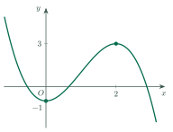
Hình vẽ là đồ thị hàm số \(y=f(x)\). Với những giá trị nào của \(m\) thì phương trình \(f(x)=m\) có ba nghiệm phân biệt?
Answer: b. The line \(y=m\) cuts the graph three times exactly when it lies strictly between the extreme values \(-1\) and \(3\).
Đáp án b. Đường thẳng \(y=m\) cắt đồ thị tại ba điểm khi và chỉ khi nó nằm giữa (không trùng) hai giá trị cực trị \(-1\) và \(3\).
The figure shows the graph of \(y=f(x)\). How many real solutions does \(3f(x)-12=0\) have?
Hình vẽ là đồ thị hàm số \(y=f(x)\). Phương trình \(3f(x)-12=0\) có bao nhiêu nghiệm thực?
Answer: d. \(3f(x)-12=0\Leftrightarrow f(x)=4\); the line \(y=4\) meets the graph at \(1\) point(s).
Đáp án d. \(3f(x)-12=0\Leftrightarrow f(x)=4\); đường thẳng \(y=4\) cắt đồ thị tại \(1\) điểm.
The three extreme points of the graph of \(y=x^4-8x^2+2\) form a triangle. Its area is…
Ba điểm cực trị của đồ thị hàm số \(y=x^4-8x^2+2\) tạo thành một tam giác. Diện tích tam giác đó là
Answer: d. \(y'=4x(x^2-4)\): points \((0;2)\), \((\pm2;-14)\). Base \(4\), height \(16\): area \(\dfrac12\cdot4\cdot16=32\).
Đáp án d. \(y'=4x(x^2-4)\): các điểm \((0;2)\), \((\pm2;-14)\). Đáy \(4\), chiều cao \(16\): diện tích \(\dfrac12\cdot4\cdot16=32\).
Which function has the variation table shown?
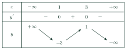
Bảng biến thiên trong hình là của hàm số nào?
Answer: d. The table needs \(y'=0\) at \(x=1\), \(x=3\), the right sign of \(a\) and the values \(-3\), \(1\): only \(y=-x^3+6x^2-9x+1\) fits.
Đáp án d. Bảng cần \(y'=0\) tại \(x=1\), \(x=3\), dấu của \(a\) phù hợp và các giá trị \(-3\), \(1\): chỉ \(y=-x^3+6x^2-9x+1\) phù hợp.
How many points do the graphs of \(y=x^3-3x^2\) and \(y=4x-12\) have in common?
Đồ thị hàm số \(y=x^3-3x^2\) và đường thẳng \(y=4x-12\) có bao nhiêu điểm chung?
Answer: b. Solve \(x^3-3x^2=4x-12\Leftrightarrow x^3-3x^2-4x+12=0\), whose roots are \(-2, 2, 3\): \(3\) common point(s).
Đáp án b. Giải \(x^3-3x^2=4x-12\Leftrightarrow x^3-3x^2-4x+12=0\), có nghiệm \(-2, 2, 3\): \(3\) điểm chung.
A. Multiple ChoiceA. Trắc nghiệm nhiều lựa chọn
Where is the local minimum point of \(y=x^3-6x^2\)?
Điểm cực tiểu của đồ thị \(y=x^3-6x^2\) là điểm nào?
Answer: c. \(y'=3x(x-4)\); the sign changes from \(-\) to \(+\) at \(x=4\), and \(y(4)=64-96=-32\).
Đáp án c. \(y'=3x(x-4)\); dấu đổi từ \(-\) sang \(+\) tại \(x=4\), và \(y(4)=64-96=-32\).
What is the center of symmetry of \(y=\dfrac{3x+2}{x-1}\)?
Tâm đối xứng của đồ thị \(y=\dfrac{3x+2}{x-1}\) là điểm nào?
Answer: d. It is the intersection of the asymptotes \(x=1\) and \(y=3\).
Đáp án d. Đó là giao điểm của hai tiệm cận \(x=1\) và \(y=3\).
What is the horizontal asymptote of \(y=\dfrac{5x-2}{x+4}\)?
Tiệm cận ngang của đồ thị \(y=\dfrac{5x-2}{x+4}\) là đường nào?
Answer: c. \(y=\dfrac ac=\dfrac51=5\).
Đáp án c. \(y=\dfrac ac=\dfrac51=5\).
What is the local maximum value of \(y=x^3-12x+5\)?
Giá trị cực đại của hàm số \(y=x^3-12x+5\) là bao nhiêu?
Answer: a. The maximum is at \(x=-2\): \(-8+24+5=21\).
Đáp án a. Cực đại tại \(x=-2\): \(-8+24+5=21\).
B. True or FalseB. Đúng hoặc sai
True or false: the graph of \(y=x^6-x^2\) is symmetric about the y-axis.
Đúng hay sai: đồ thị \(y=x^6-x^2\) đối xứng qua trục tung.
True. The function is even.
Đúng. Đây là hàm số chẵn.
True or false: the graph of \(y=x^3-x\) is symmetric about the y-axis.
Đúng hay sai: đồ thị \(y=x^3-x\) đối xứng qua trục tung.
False. \(y=x^3-x\) is odd: its graph is symmetric about the origin.
Sai. \(y=x^3-x\) là hàm số lẻ: đồ thị đối xứng qua gốc tọa độ.
C. Short AnswerC. Trả lời ngắn
Find the y-intercept of \(y=(x+1)^2(x-3)\).
Tìm tung độ giao điểm của \(y=(x+1)^2(x-3)\) với trục tung.
Enter a number.
Nhập một số.
Answer: \(-3\). \(y(0)=1\cdot(-3)=-3\).
Đáp án: \(-3\). \(y(0)=1\cdot(-3)=-3\).
How many different x-intercepts does \(y=x^4-5x^2+4\) have?
Đồ thị \(y=x^4-5x^2+4\) có bao nhiêu giao điểm phân biệt với trục hoành?
Enter a whole number.
Nhập một số nguyên.
Answer: 4. \((x^2-1)(x^2-4)=0\) gives \(x=\pm1,\pm2\).
Đáp án: 4. \((x^2-1)(x^2-4)=0\) cho \(x=\pm1,\pm2\).
Find the local minimum value of \(y=\dfrac{x^2-2x+4}{x-2}\) at \(x=4\).
Tìm giá trị cực tiểu của \(y=\dfrac{x^2-2x+4}{x-2}\) tại \(x=4\).
Enter a number.
Nhập một số.
Answer: 6. \(y(4)=\dfrac{16-8+4}{2}=6\).
Đáp án: 6. \(y(4)=\dfrac{16-8+4}{2}=6\).
The graph of \(y=\dfrac{ax-1}{x+2}\) has the center of symmetry \((-2,3)\). Find \(a\).
Đồ thị \(y=\dfrac{ax-1}{x+2}\) có tâm đối xứng \((-2,3)\). Tìm \(a\).
Enter a number.
Nhập một số.
Answer: 3. The horizontal asymptote is \(y=a\), so \(a=3\).
Đáp án: 3. Tiệm cận ngang là \(y=a\) nên \(a=3\).
D. Self-practice: Multiple ChoiceD. Tự luyện: trắc nghiệm
The figure shows the graph of which function?
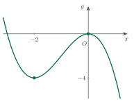
Hình vẽ là đồ thị của hàm số nào?
Answer: a. Check the shape (\(a\lt0\)), the point on \(Oy\) \((0;0)\) and the turning points \(x=-2\), \(x=0\): only \(y=-x^3-3x^2\) fits.
Đáp án a. Xét dáng đồ thị (\(a\lt0\)), giao điểm với \(Oy\) là \((0;0)\) và các điểm cực trị \(x=-2\), \(x=0\): chỉ \(y=-x^3-3x^2\) phù hợp.
The figure below shows the graph of a function and its asymptotes (dashed). Which function is it?
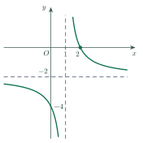
Hình vẽ dưới đây là đồ thị của một hàm số và các đường tiệm cận (nét đứt). Đó là hàm số nào?
Answer: c. Asymptotes \(x=1\), \(y=-2\) and the branches lie top-right and bottom-left: \(y=\dfrac{-2x+4}{x-1}\).
Đáp án c. Tiệm cận \(x=1\), \(y=-2\) và hai nhánh nằm ở góc trên phải và dưới trái: \(y=\dfrac{-2x+4}{x-1}\).
The figure below shows the graph of \(y=ax^3+bx^2+cx+d\). Which is true?
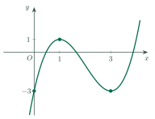
Hình vẽ dưới đây là đồ thị hàm số \(y=ax^3+bx^2+cx+d\). Khẳng định nào đúng?
Answer: d. The right-hand branch goes up, so \(a\gt0\); the graph meets \(Oy\) at \((0;d)\) below \(Ox\), so \(d\lt0\).
Đáp án d. Nhánh bên phải đi lên nên \(a\gt0\); đồ thị cắt \(Oy\) tại \((0;d)\) nằm dưới \(Ox\) nên \(d\lt0\).
The figure below shows the graph of \(y=f(x)\). For which values of \(m\) does \(f(x)=m\) have three distinct solutions?
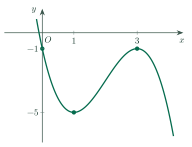
Hình vẽ dưới đây là đồ thị hàm số \(y=f(x)\). Với những giá trị nào của \(m\) thì phương trình \(f(x)=m\) có ba nghiệm phân biệt?
Answer: c. The line \(y=m\) cuts the graph three times exactly when it lies strictly between the extreme values \(-5\) and \(-1\).
Đáp án c. Đường thẳng \(y=m\) cắt đồ thị tại ba điểm khi và chỉ khi nó nằm giữa (không trùng) hai giá trị cực trị \(-5\) và \(-1\).
The figure below shows the graph of \(y=f(x)\). How many real solutions does \(2f(x)+8=0\) have?
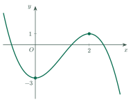
Hình vẽ dưới đây là đồ thị hàm số \(y=f(x)\). Phương trình \(2f(x)+8=0\) có bao nhiêu nghiệm thực?
Answer: a. \(2f(x)+8=0\Leftrightarrow f(x)=-4\); the line \(y=-4\) meets the graph at \(1\) point(s).
Đáp án a. \(2f(x)+8=0\Leftrightarrow f(x)=-4\); đường thẳng \(y=-4\) cắt đồ thị tại \(1\) điểm.
The three extreme points of the graph of \(y=x^4-18x^2-3\) form a triangle. Its area is…
Ba điểm cực trị của đồ thị hàm số \(y=x^4-18x^2-3\) tạo thành một tam giác. Diện tích tam giác đó là
Answer: d. \(y'=4x(x^2-9)\): points \((0;-3)\), \((\pm3;-84)\). Base \(6\), height \(81\): area \(\dfrac12\cdot6\cdot81=243\).
Đáp án d. \(y'=4x(x^2-9)\): các điểm \((0;-3)\), \((\pm3;-84)\). Đáy \(6\), chiều cao \(81\): diện tích \(\dfrac12\cdot6\cdot81=243\).
The variation table belongs to which function?
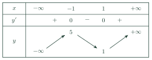
Hàm số nào có bảng biến thiên như hình?
Answer: d. The table needs \(y'=0\) at \(x=-1\), \(x=1\), the right sign of \(a\) and the values \(5\), \(1\): only \(y=x^3-3x+3\) fits.
Đáp án d. Bảng cần \(y'=0\) tại \(x=-1\), \(x=1\), dấu của \(a\) phù hợp và các giá trị \(5\), \(1\): chỉ \(y=x^3-3x+3\) phù hợp.
How many points do the graphs of \(y=x^3+2x^2\) and \(y=9x+18\) have in common?
Đồ thị hàm số \(y=x^3+2x^2\) và đường thẳng \(y=9x+18\) có bao nhiêu điểm chung?
Answer: d. Solve \(x^3+2x^2=9x+18\Leftrightarrow x^3+2x^2-9x-18=0\), whose roots are \(-3, -2, 3\): \(3\) common point(s).
Đáp án d. Giải \(x^3+2x^2=9x+18\Leftrightarrow x^3+2x^2-9x-18=0\), có nghiệm \(-3, -2, 3\): \(3\) điểm chung.
A. Multiple ChoiceA. Trắc nghiệm nhiều lựa chọn
Where is the local minimum point of \(y=x^3-12x\)?
Điểm cực tiểu của đồ thị \(y=x^3-12x\) là điểm nào?
Answer: a. \(y'=3x^2-12\); the sign changes from \(-\) to \(+\) at \(x=2\), and \(y(2)=8-24=-16\).
Đáp án a. \(y'=3x^2-12\); dấu đổi từ \(-\) sang \(+\) tại \(x=2\), và \(y(2)=8-24=-16\).
What is the center of symmetry of \(y=\dfrac{4x+1}{x+3}\)?
Tâm đối xứng của đồ thị \(y=\dfrac{4x+1}{x+3}\) là điểm nào?
Answer: c. It is the intersection of the asymptotes \(x=-3\) and \(y=4\).
Đáp án c. Đó là giao điểm của hai tiệm cận \(x=-3\) và \(y=4\).
What is the horizontal asymptote of \(y=\dfrac{2x+7}{3x-1}\)?
Tiệm cận ngang của đồ thị \(y=\dfrac{2x+7}{3x-1}\) là đường nào?
Answer: d. \(y=\dfrac ac=\dfrac23\).
Đáp án d. \(y=\dfrac ac=\dfrac23\).
What is the local maximum value of \(y=-x^3+3x+1\)?
Giá trị cực đại của hàm số \(y=-x^3+3x+1\) là bao nhiêu?
Answer: d. \(y'=-3x^2+3=0\) at \(x=\pm1\). The maximum is at \(x=1\): \(-1+3+1=3\).
Đáp án d. \(y'=-3x^2+3=0\) tại \(x=\pm1\). Cực đại tại \(x=1\): \(-1+3+1=3\).
B. True or FalseB. Đúng hoặc sai
True or false: the graph of \(y=-x^4+4x^2\) is symmetric about the y-axis.
Đúng hay sai: đồ thị \(y=-x^4+4x^2\) đối xứng qua trục tung.
True. The function is even.
Đúng. Đây là hàm số chẵn.
True or false: the graph of \(y=x^3+2x\) is symmetric about the y-axis.
Đúng hay sai: đồ thị \(y=x^3+2x\) đối xứng qua trục tung.
False. \(y=x^3+2x\) is odd: its graph is symmetric about the origin.
Sai. \(y=x^3+2x\) là hàm số lẻ: đồ thị đối xứng qua gốc tọa độ.
C. Short AnswerC. Trả lời ngắn
Find the y-intercept of \(y=(x-2)^2(x+1)\).
Tìm tung độ giao điểm của \(y=(x-2)^2(x+1)\) với trục tung.
Enter a number.
Nhập một số.
Answer: 4. \(y(0)=4\cdot1=4\).
Đáp án: 4. \(y(0)=4\cdot1=4\).
How many different x-intercepts does \(y=x^4+x^2-2\) have?
Đồ thị \(y=x^4+x^2-2\) có bao nhiêu giao điểm phân biệt với trục hoành?
Enter a whole number.
Nhập một số nguyên.
Answer: 2. \((x^2+2)(x^2-1)=0\) gives only \(x=\pm1\), because \(x^2+2>0\).
Đáp án: 2. \((x^2+2)(x^2-1)=0\) chỉ cho \(x=\pm1\) vì \(x^2+2>0\).
Find the local minimum value of \(y=\dfrac{x^2-4x+9}{x-4}\) at \(x=7\).
Tìm giá trị cực tiểu của \(y=\dfrac{x^2-4x+9}{x-4}\) tại \(x=7\).
Enter a number.
Nhập một số.
Answer: 10. \(y(7)=\dfrac{49-28+9}{3}=10\).
Đáp án: 10. \(y(7)=\dfrac{49-28+9}{3}=10\).
The graph of \(y=\dfrac{ax+2}{x-3}\) has the center of symmetry \((3,4)\). Find \(a\).
Đồ thị \(y=\dfrac{ax+2}{x-3}\) có tâm đối xứng \((3,4)\). Tìm \(a\).
Enter a number.
Nhập một số.
Answer: 4. The horizontal asymptote is \(y=a\), so \(a=4\).
Đáp án: 4. Tiệm cận ngang là \(y=a\) nên \(a=4\).
D. Self-practice: Multiple ChoiceD. Tự luyện: trắc nghiệm
Which of the following functions is drawn in the figure?
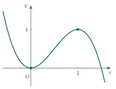
Hàm số nào sau đây có đồ thị như hình vẽ?
Answer: b. Check the shape (\(a\lt0\)), the point on \(Oy\) \((0;0)\) and the turning points \(x=0\), \(x=2\): only \(y=-x^3+3x^2\) fits.
Đáp án b. Xét dáng đồ thị (\(a\lt0\)), giao điểm với \(Oy\) là \((0;0)\) và các điểm cực trị \(x=0\), \(x=2\): chỉ \(y=-x^3+3x^2\) phù hợp.
Look at the figure. It shows the graph of a function and its asymptotes (dashed). Which function is it?
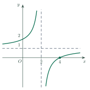
Quan sát hình vẽ: đây là đồ thị của một hàm số và các đường tiệm cận (nét đứt). Đó là hàm số nào?
Answer: c. Asymptotes \(x=2\), \(y=1\) and the branches lie top-left and bottom-right: \(y=\dfrac{x-4}{x-2}\).
Đáp án c. Tiệm cận \(x=2\), \(y=1\) và hai nhánh nằm ở góc trên trái và dưới phải: \(y=\dfrac{x-4}{x-2}\).
Look at the figure. It shows the graph of \(y=ax^3+bx^2+cx+d\). Which is true?
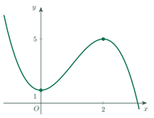
Quan sát hình vẽ: đây là đồ thị hàm số \(y=ax^3+bx^2+cx+d\). Khẳng định nào đúng?
Answer: a. The right-hand branch goes down, so \(a\lt0\); the graph meets \(Oy\) at \((0;d)\) above \(Ox\), so \(d\gt0\).
Đáp án a. Nhánh bên phải đi xuống nên \(a\lt0\); đồ thị cắt \(Oy\) tại \((0;d)\) nằm trên \(Ox\) nên \(d\gt0\).
Look at the figure. It shows the graph of \(y=f(x)\). For which values of \(m\) does \(f(x)=m\) have three distinct solutions?
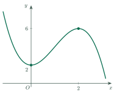
Quan sát hình vẽ: đây là đồ thị hàm số \(y=f(x)\). Với những giá trị nào của \(m\) thì phương trình \(f(x)=m\) có ba nghiệm phân biệt?
Answer: d. The line \(y=m\) cuts the graph three times exactly when it lies strictly between the extreme values \(2\) and \(6\).
Đáp án d. Đường thẳng \(y=m\) cắt đồ thị tại ba điểm khi và chỉ khi nó nằm giữa (không trùng) hai giá trị cực trị \(2\) và \(6\).
Look at the figure. It shows the graph of \(y=f(x)\). How many real solutions does \(2f(x)+6=0\) have?
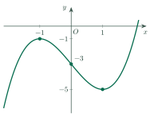
Quan sát hình vẽ: đây là đồ thị hàm số \(y=f(x)\). Phương trình \(2f(x)+6=0\) có bao nhiêu nghiệm thực?
Answer: a. \(2f(x)+6=0\Leftrightarrow f(x)=-3\); the line \(y=-3\) meets the graph at \(3\) point(s).
Đáp án a. \(2f(x)+6=0\Leftrightarrow f(x)=-3\); đường thẳng \(y=-3\) cắt đồ thị tại \(3\) điểm.
The three extreme points of the graph of \(y=x^4-8x^2-1\) form a triangle. Its area is…
Ba điểm cực trị của đồ thị hàm số \(y=x^4-8x^2-1\) tạo thành một tam giác. Diện tích tam giác đó là
Answer: a. \(y'=4x(x^2-4)\): points \((0;-1)\), \((\pm2;-17)\). Base \(4\), height \(16\): area \(\dfrac12\cdot4\cdot16=32\).
Đáp án a. \(y'=4x(x^2-4)\): các điểm \((0;-1)\), \((\pm2;-17)\). Đáy \(4\), chiều cao \(16\): diện tích \(\dfrac12\cdot4\cdot16=32\).
Which of the following functions has this variation table?
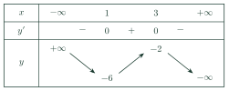
Bảng biến thiên đã cho là của hàm số nào sau đây?
Answer: c. The table needs \(y'=0\) at \(x=1\), \(x=3\), the right sign of \(a\) and the values \(-6\), \(-2\): only \(y=-x^3+6x^2-9x-2\) fits.
Đáp án c. Bảng cần \(y'=0\) tại \(x=1\), \(x=3\), dấu của \(a\) phù hợp và các giá trị \(-6\), \(-2\): chỉ \(y=-x^3+6x^2-9x-2\) phù hợp.
How many points do the graphs of \(y=x^3+3x^2\) and \(y=x+3\) have in common?
Đồ thị hàm số \(y=x^3+3x^2\) và đường thẳng \(y=x+3\) có bao nhiêu điểm chung?
Answer: a. Solve \(x^3+3x^2=x+3\Leftrightarrow x^3+3x^2-x-3=0\), whose roots are \(-3, -1, 1\): \(3\) common point(s).
Đáp án a. Giải \(x^3+3x^2=x+3\Leftrightarrow x^3+3x^2-x-3=0\), có nghiệm \(-3, -1, 1\): \(3\) điểm chung.
8Common MistakesLỗi thường gặp
Skipping the domain. A missing point (like \(x=1\)) changes the whole shape.
Bỏ qua tập xác định. Điểm bị thiếu (như \(x=1\)) làm thay đổi hình dạng đồ thị.
Forgetting the limits. The ends of the graph come from the limits, not from the extrema.
Quên giới hạn. Hai đầu đồ thị do giới hạn quyết định, không phải do cực trị.
Drawing the graph across an asymptote. A vertical asymptote splits the graph into separate branches.
Vẽ đồ thị cắt qua tiệm cận đứng. Tiệm cận đứng chia đồ thị thành các nhánh riêng.
9Lesson SummaryTổng kết
Follow the six steps: domain, derivative, limits, variation table, intercepts, drawing.
Sáu bước: tập xác định, đạo hàm, giới hạn, bảng biến thiên, giao điểm, vẽ.
Even functions are symmetric about the y-axis; odd ones about the origin.
Hàm chẵn đối xứng qua trục tung; hàm lẻ đối xứng qua gốc tọa độ.
For \(\dfrac{ax+b}{cx+d}\), the asymptotes cross at the center of symmetry.
Với \(\dfrac{ax+b}{cx+d}\), hai tiệm cận cắt nhau tại tâm đối xứng.